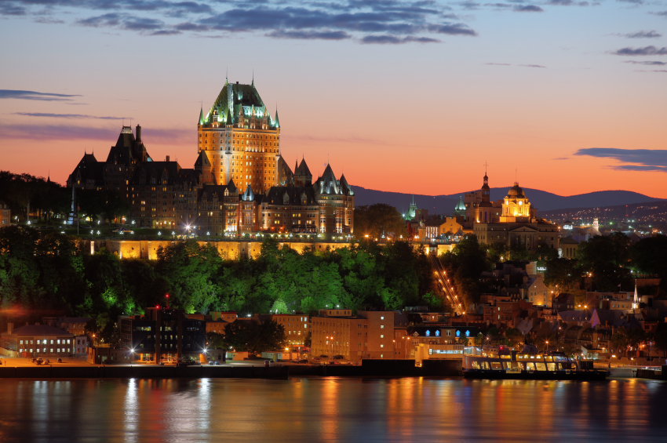
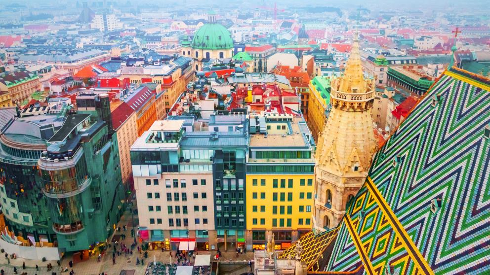
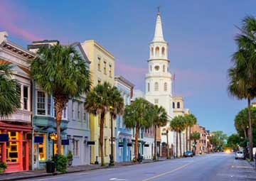

Para un viajero salir de la rutina es indispensable, forma parte de la experiencia. Uno sale en busca de aventuras nuevas, en lugares diferentes y completamente nuevos que exigen que salgas de tu zona de confort, así como de tu entorno habitual. Es por eso que en la actualidad es cada vez más común que las personas busquen algún lugar fuera de la ciudad para tener una nueva aventura que les permita desconectarse del mundo actual, sin embargo, las nuevas experiencias también se encuentran en nuevas ciudades.
Si bien es cierto que la urbanización ha traido consigo diversas clases de problemas, hay ciudades a las que es imposible quitarle méritos, son tan encantadoras que todos queremos visitarlas. La aventura, después de todo, está en cualquier lugar.Tomando en cuenta esto, hemos decidido traer una sección donde mostremos todas estas ciudades cautivadoras para que no te pierdas de ninguna.
|  | QUEBEC, CANADÁ La provincia de Quebec es territorialmente la provincia más grande de Canadá. Por su idioma, su cultura y sus instituciones, forma una “nación dentro de Canadá”. La urbe más poblada es Montreal. |
| VIENA, AUSTRIA En 2001, la Unesco declaró el “Centro histórico de Viena” como Patrimonio de la Humanidad, por sus cualidades arquitectónicas y urbanas que representan un intercambio de valores a lo largo del II milenio. |
 |
 |
SAN SEBASTÍAN, ESPAÑA El paisaje de San Sebastián, España, dominado por la bahía de La Concha, así como su desarrollo arquitectónico moderno ha dado proyección exterior a la ciudad, a pesar de sus pequeña dimensiones. Una ciudad bella y acogedora. |
| CHARLESTON, CAROLINA DEL SUR, EE.UU. Charleston es una ciudad puerto de Carolina del Sur, que se caracteriza por sus calles de adoquines, los carruajes tirados por caballos y las casas antebellum de colores pastel, en los distritos de Battery y el Barrio Francés. |
 |

T R A B A J A M O S P A R A Q U E L O S A M A N T E S D E L A A V E N T U R A |